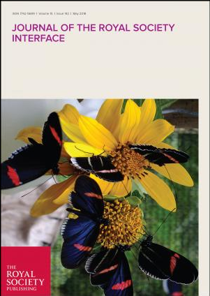
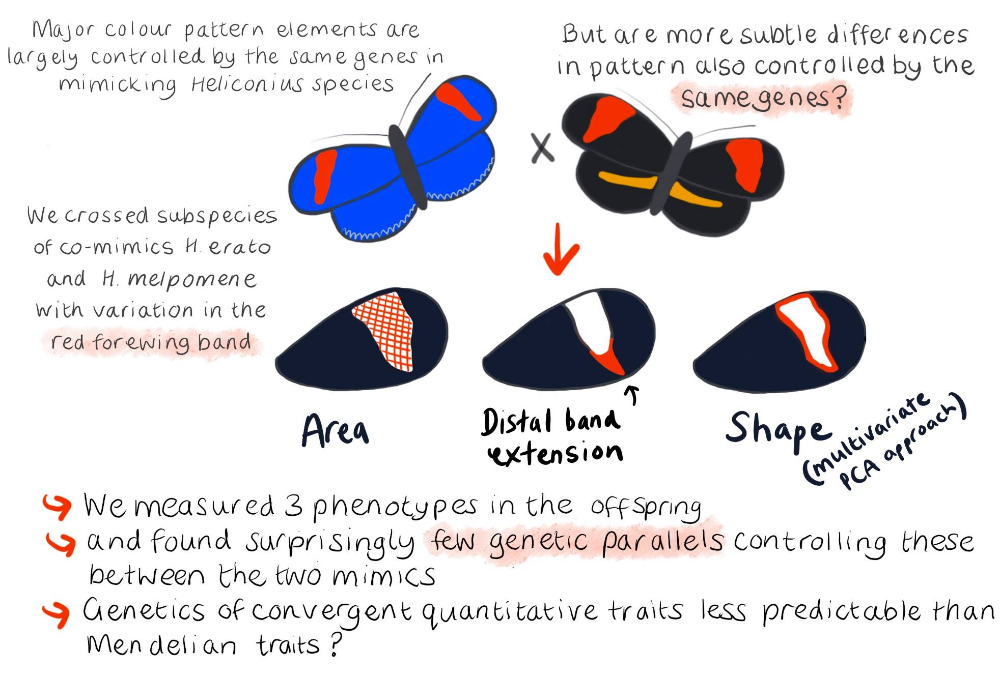

melanie.n.brien@jyu.fi
Department of Biological & Environmental Science
University of Jyväskylä
Finland
Hi! I am postdoctoral researcher studying the genetics of colour and pattern in Lepidoptera. Currently I am focusing on the wood tiger moth as part of a collaborative project between the University of Jyväskylä, Finland, and the University of Cambridge, UK. (Website work in progress!)
University of Jyväskylä, Finland and University of Cambridge, UK. Predator Prey Interactions group.
During my postdoc I will be studying the mechanisms producing the colour polymorphism
in the wood tiger moth. We aim to determine the genes involved in controlling the
colour pattern and investigate differences in gene regulatory networks between
different morphs.
The University of Sheffield, UK. Nadeau Lab.
My PhD focused on iridescent structural colour in the Heliconius butterflies.
In particular I looked at two distantly related mimietic species which both evolved structural colour
in certain geographical races. I also looked at the condition dependence of this trait. Thesis, 2019

